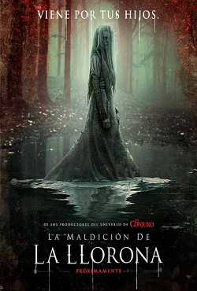

LA MALDICIÓN DE LA LLORONA
Tras ignorar sus espeluznantes advertencias, La Llorona ahora persigue a una trabajadora social y sus pequeños hijos. La única esperanza que tienen de sobrevivir a su ira letal será a través de un cura y un ritual para eliminar el espíritu maligno en los límites entre el miedo y la fe.
